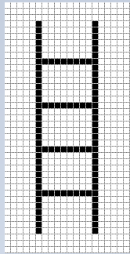
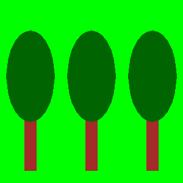
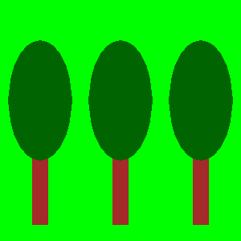

Цртање задатих цртежа¶
Као што смо већ рекли, слике које можемо да генеришемо у PyGame окружењу помоћу функција за цртање састоје се од пиксела. То су такозване растерске слике или битмапе. Видели смо да је за цртање основних облика потребно знати координате пиксела које одређују сваки такав облик. Међутим, у реалнијој ситуацији ове координате нису директно задате и треба да их сами одредимо.
Уколико желимо да програмски генеришемо слику по узору на неку постојећу битмапу, координате тачака можемо да одредимо са дате слике. Слику можемо да увећамо у неком од програма за гледање слика, тако да сваки пиксел изгледа као квадратић. То на пример може да изгледа овако:
{kind=link}
Видимо да је ова слика генерисана цртањем 4 водоравне и 2 усправне линије, као и да је свих 6 линија црне боје и дебљине 1. Пошто смо научили да се координате x рачунају слева на десно, а y одозго на доле, као и да се броји од нуле, бројањем можемо да одредимо координате почетних и крајњих тачака свих шест линија.
Мердевине¶
Очитајте координате са увећане слике горе и напишите програм који црта такве мердевине.
Помоћ: бројањем (од нуле) можемо да установимо да су координате крајева леве усправне линије (5, 3) и (5, 36). На исти начин треба одредити координате крајњих тачака осталих 5 линија.
Слика у правој величини је веома мала, широка је свега 20 а висока 40 пиксела. Бројањем би могле да се одреде координате тачака и за веће слике, али би то бројање било заморно и подложно грешкама (зато смо у овом примеру изабрали тако малу слику). Добра вест је да програми за гледање и уређивање слика по правилу приказују координате пиксела на коме се налази курсор миша. Координате курсора су обично исписане негде у статусној линији на дну прозора у коме се програм извршава, често у доњем левом углу.
На пример, у прораму за цртање Paint, када се слика увећа 8 пута и укључи решетка која истиче појединачне пикселе (grid), можемо лако да се се позиционирамо на било који пиксел и да очитамо његове координате. На овој слици, курсор миша је био на црвеном пикселу, који, као што смо већ рекли, има координате (5, 36).

У задацима који следе треба да напишете програм који црта цртеж што приближнији датом. Цртеже које треба да нацртате можете да видите када кликнете на дугме “Прикажи пример”.
Да бисте лакше могли да одредите координате важних тачака на цртежу, програм који покрећете кликом на дугме “Прикажи пример” ће осим цртежа приказати и координате тачке на којој се налази курсор миша. Ради лакшег очитавања, у свим примерима су координате свих битних тачака заокружене на 5 пиксела (завршавају се нулом или петицом).
Ако желите да решите ове задатке ван веб прегледача у свом окружењу за писање програма, можете овде да преузмете слике које треба да исцртају ваши програми, да их отворите у неком програму за гледање слика и у њему очитате координате важних тачака.


 

{kind=link}
Антена¶
Пре кабловске телевизије телевизијски сигнал се примао помоћу антена које су људи углавном постављали на кровове својих кућа и зграда. У овом задатку се црта једна таква антена.
Као што се види када покренете пример, цртеж се састоји од седам линија. Усправна линија је дебљине 4 пиксела, горње две водоравне су дебљине 1, средње две дебљине 2, а доње две дебљине 3. Боја позадине је “skyblue”.
Дат је комплетан програм, можете да га испробате и овде.
Вага¶
Овај цртеж се састоји од линије (чија је дебљина 2) и три троугла. Средњи троугао, који представља ослонац ваге, попуњен је бојом, па при његовом цртању треба изоставити параметар који задаје дебљину, док за остала два троугла треба навести дебљину 2.
Емотикон¶
У овом задатку је посао нешто сложенији. Пошто се цртеж састоји од кругова и елипси, не можемо потпуно тачно да директно очитамо све координате и величине које су нам потребне. Оно што можемо је да за сваку елипсу очитамо \(x\) координате крајње леве и крајње десне тачке (\(X_L\) и \(X_D\)), као и \(y\) координате највише и најниже тачке (\(Y_V\) и \(Y_N\)). Након тога, ширину и висину елипсе можемо да израчунамо као разлике одговарајућих \(x\) (за ширину), односно \(y\) координата (за висину).
Што се тиче круга, имамо више могућности:
можемо да нацртамо круг као елипсу уписану у квадрат (користећи функцију pg.draw.ellipse)
можемо да приближно очитамо координате центра круга
ако желимо да прецизније одредимо координате центра круга, можемо прво да одредимо тачке \(X_L\), \(X_D\), \(Y_V\) и \(Y_N\) као за елипсе у првом делу објашњења поступка, а затим да координате центра круга израчунамо из формула \(X_c = {{X_D + X_L} \over 2}\), \(Y_c = {{Y_V + Y_N} \over 2}\).
Кућа¶
Цртеж куће се састоји од браон правоугаоника и црвеног троугла. Троугао можемо да нацртамо као многоугао са три темена. Сунце је приказано као наранџасти круг, а трава као зелени правоугаоник. Потребно је водити рачуна о редоследу приказивања траве и сунца.
Довољно је да координате центра круга који представља Сунце очитате приближно. За оне оји желе мали математички изазов, напомињемо да се координате центра могу прецизније одредити слично као у претходном задатку, иако најнижа тачка није видљива и координата \(Y_N\) не може да се очита.
Ако желите да видите како можете да одредите координате центра прецизнијим очитавањем и рачунањем, кликните на дугме “Одређивање центра”.
Нека су, као и у претходном задатку, са \(X_L\) и \(X_D\) означене \(x\) координате крајње леве и крајње десне тачке круга који представља Сунце, а са \(Y_V\) и \(Y_N\) \(y\) координате највише и најниже тачке тог круга.
\(X\) координату центра круга можемо да одредимо као у претходном примеру, \(X_c = {{X_D + X_L} \over 2}\).
Пошто се најнижа тачка круга не види, не можемо да очитамо вредност \(Y_N\), али можемо да одредимо полупречник \(r\) користећи \(r =X_c - X_L\) или \(r =X_D - X_c\). Сада се \(y\) координата центра круга лако добија: \(Y_c = Y_V + r\), па нам \(Y_N\) није ни било потребно.
Дрвеће¶
Потребно је нацртати три потпуно једнака дрвета, тако да се свако следеће дрво добија померањем претходног надесно. Овај задатак је очигледно могао да буде задат и само описом првог дрвета и задавањем размака између два суседна дрвета. Програм који црта слику је ипак остављен, јер је задавање помоћу слике јасније и једноствније.
Да би задатак мало више личио на реалну ситуацију (у којој слике нема), у овом примеру очитавање \(x\) координата је намерно онемогућено за десну страну слике. Све потребне координате које не можете да очитате, можете да израчунате.